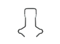
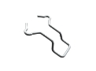
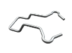
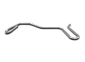
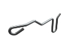
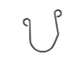

Изделия из проволоки и ленты
Изготовление изделий из проволоки и ленты на заказ партиями от 1-й штуки от 1-го дня.
Выполним по разнообразным параметрам, чертежам или образцу, фото, эскизу.
(сроки выполнения заказа обговариваются с каждым клиентом индивидуально)
- 
- 
- 
- 
- 
- 
Производство изделий из проволоки и ленты
Полтавская производственная компания ООО "Индустриал Спрингс" изготавливает изделия из проволоки и металлической ленты по типовым и индивидуальным чертежам заказчика.
Изготовление изделий из проволоки
Производство изделий из проволоки выполняется по технологии протяжки путем прохождения проволоки сквозь ряд отверстий разного диаметра. Если нужно получить калиброванную проволоку, ее пропускают через калибровочную насадку, что придает изделиям:
- - Высокую точность диаметра;
- - Ровную и гладкую поверхность;
- - Идеальную форму.
Изготовление изделий из металлической ленты
Для производства изделий из металлической ленты используется холоднокатанная лента, изготовленная из низкоуглеродистой или штамповальной стали. Примерами изделий из металлической ленты могут служить:
- - Элементы подшипников (наружное и внутреннее кольцо, сепаратор);
- - Изготовления трубной продукции;
- - Штамповки.
Изделия из проволоки и ленты можно заказать и купить у нас крупными и мелкооптовыми партиями с доставкой по всей территории Украины. При оформлении заявки на расчет и изготовление изделий необходимо проконсультироваться с нашими специалистами, для точного формирования технического задания к Вашему заказу, где будут учтены все необходимые параметры и условия. Для заказа и ознакомления с прайсом свяжитесь с мененджером нашей компании через форму заявки или по одному из телефонов: 066 283 80 82, 097 305 81 85, 0532 591 590.